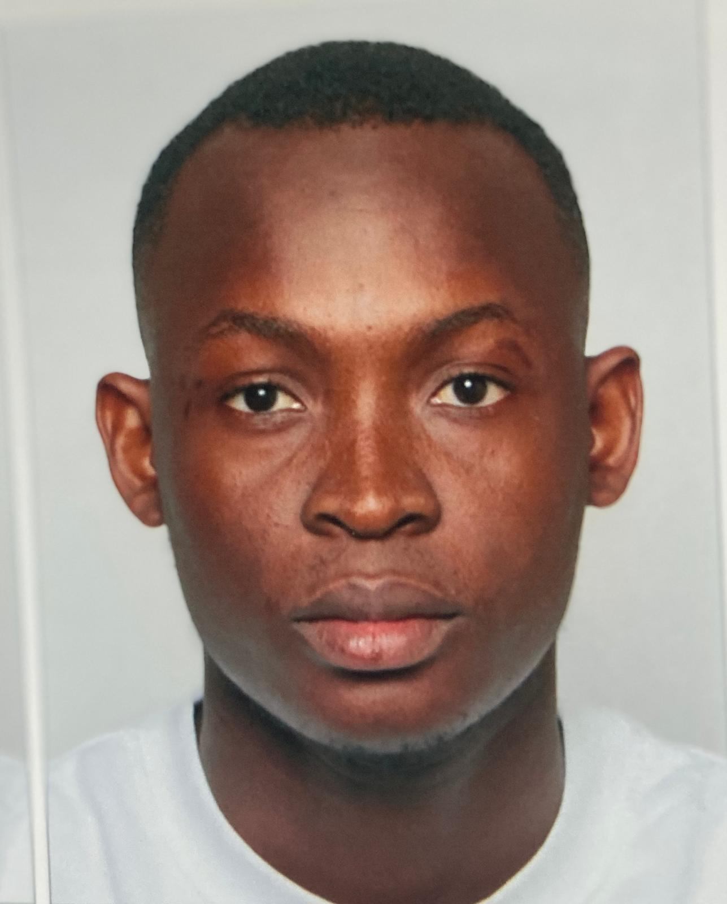

À Propos de Moi
Je suis Marwane TCHABANNA dit KOUDJOWOU, originaire du Togo. Je suis titulaire d'une licence en Mathématiques Appliquées à la Pédagogie (LMSP) à l'Université des Sciences et Techniques de Kara (2019-2020) et d'une licence en Mathématiques Générales à l'Université de Montpellier (2024-2025).
Je fus Enseignant des sciences physiques au Lycée Sainte Marie de Sokodé pour les classes de Terminale D, Première D, Seconde CD et A4 durant l'année académique 2020-2021. J'ai également été délégué général de la Faculté des Sciences de l'Université de Kara (FasT) de 2018 à 2021.
Ma Philosophie
"J'ai une dette envers la nature, et j'entends la payer en développant des modèles mathématiques pour mieux écouter, comprendre et œuvrer pour son bien-être."
"Je veux être comme l'eau : rendre propre, rafraîchir, apaiser, éteindre le feu, et accumuler des connaissances comme la mer, qui garde tant de mystères et de richesses."
Mes Cours et Travaux

Optimisation
Travaux et projets sur les méthodes d'optimisation, algorithmes et applications pratiques.
Voir les projets Télécharger le PDF
Analyse Numérique
Études et projets sur les méthodes numériques pour résoudre des problèmes mathématiques.
Voir les projets Télécharger le PDF
Analyse Fonctionnelle
Recherches et applications en analyse fonctionnelle, espaces vectoriels et opérateurs.
Voir les projets Télécharger le PDF
Équations aux Dérivées Partielles (EDP)
Projets sur la résolution des EDP, applications en physique et ingénierie.
Voir les projets Télécharger le PDF
Géométrie Différentielle
Travaux sur les variétés différentielles, courbures et applications.
Voir les projets Télécharger le PDFProjets Personnels

Projet Agroalimentaire
Initiative pour améliorer les pratiques agroalimentaires au Togo, en utilisant des modèles analytiques.